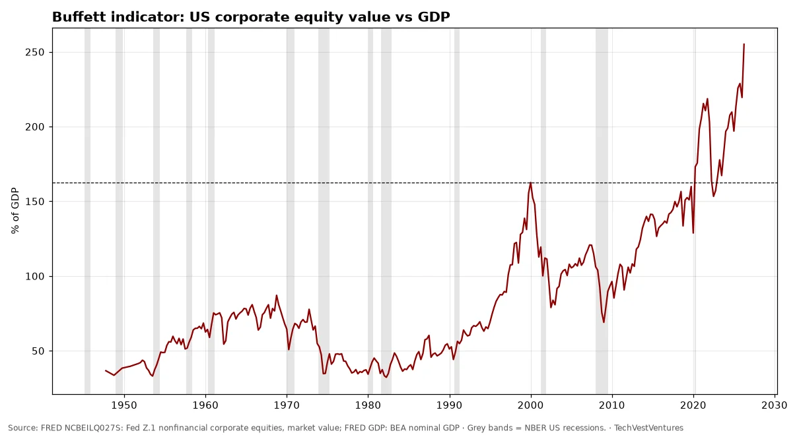
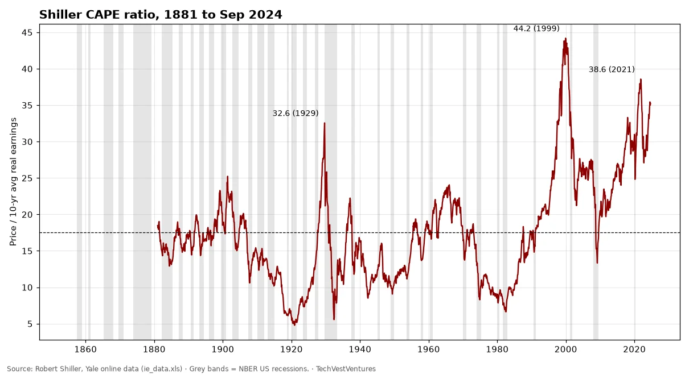
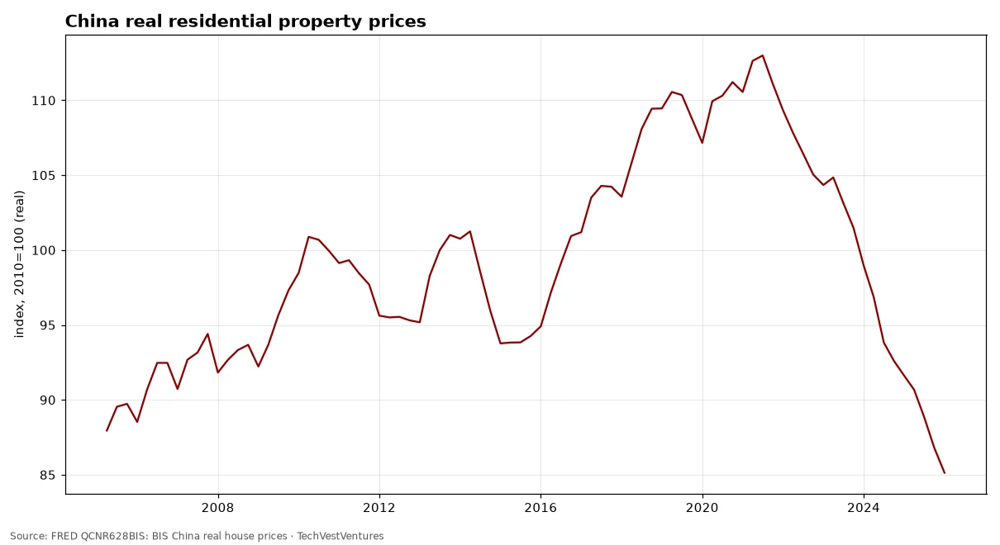
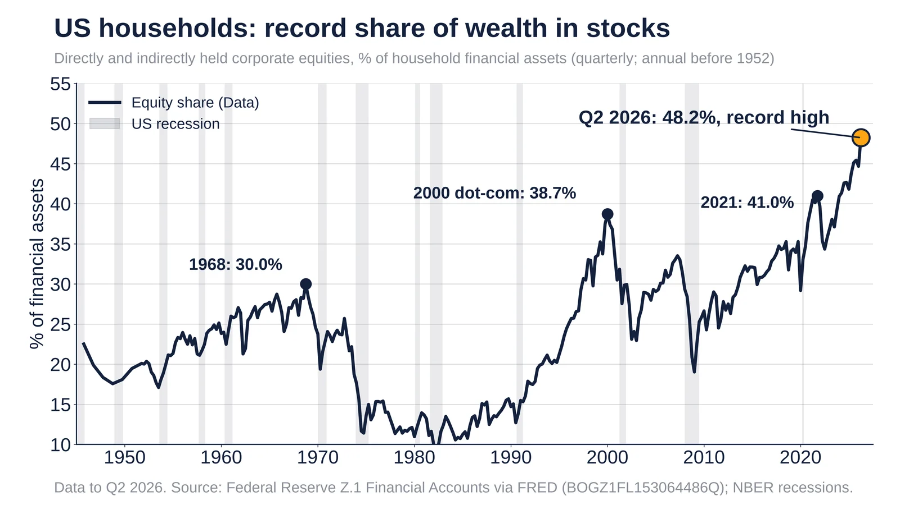
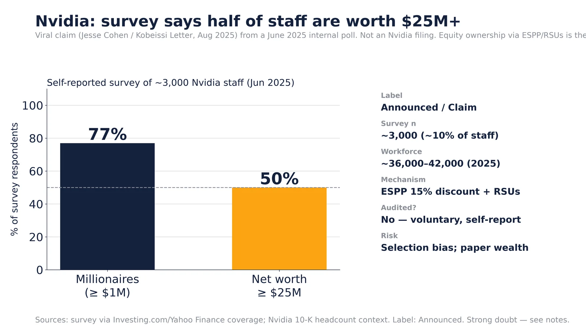

Q10. Bubble Watch

Market value of US nonfinancial corporate equities divided by GDP stood at 255% in Apr 2026 (quarter start), against 163% at the dot-com peak (Jan 2000) and a post-1945 median of 72%. Warren Buffett called this ratio 'probably the best single measure' of valuation in 2001. A high reading has preceded poor 10-year returns, but it has not timed crashes: the ratio has stayed above the 2000 peak for long stretches since 2020.
Sources: FRED NCBEILQ027S: Fed Z.1 nonfinancial corporate equities, market value FRED GDP: BEA nominal GDP

Robert Shiller's cyclically adjusted P/E for the S&P Composite. Long-run mean 17.5. Peaks: 32.6 in 1929, 44.2 in 1999, 38.6 in 2021; last value in the public file 35.2 (Sep 2024). Pattern count: only three prior readings above 30 (1929, 1997–2001, 2021) — 3 cycles, so by Michael Hentschel's rule a 'repeat' is suggestive, not proven. Note: the public Yale file we could reach ends Sep 2024.

Debit balances in customers' securities margin accounts reached $1,480bn in Sep 2026, up 31% from a year earlier. Earlier local peaks in margin debt came in March 2000, mid-2007 and late 2021, each shortly before a major market decline — three episodes in this 1997+ series, which is too few to treat as a reliable timing rule.
Sources: FINRA margin statistics

Both indexes indexed to their peaks. The Nikkei 225 fell to about 18% of its 1989 peak and did not regain it until Feb 2024, over 34 years. The Nasdaq lost about 78% and recovered in Apr 2015. Two cases only: they show what a bubble deflation can look like, not that one is due.
Sources: FRED NIKKEI225: Nikkei Inc. Nikkei 225 FRED NASDAQCOM: Nasdaq Composite

BIS total credit to the private non-financial sector (households and companies). China reached 201% of GDP in Oct 2025, up from 107% in 2008. Japan's ratio peaked at 214% in Oct 1993 before its lost decades; the BIS has long flagged rapid credit build-ups as a crisis warning.
Sources: FRED QCNPAM770A: BIS China FRED QJPPAM770A: BIS Japan FRED QUSPAM770A: BIS US FRED QXMPAM770A: BIS euro area BIS credit statistics

BIS real residential property price index for China was 85.1 in Jan 2026 (2010=100), 25% below its peak of 113.0 in Jul 2021. Property and related industries are commonly estimated at a quarter or more of China's economy.

The Kim-Wright 10-year term premium (Fed Board model) is the extra yield investors demand to lock money up for ten years instead of rolling short bills. It stood at 0.99 pts on Oct 16, 2026; October's monthly average (1.06) is the highest since April 2010, after averaging below zero in 2019-2021. A rising premium means long rates are climbing for reasons other than expected Fed policy: supply of Treasuries, inflation risk and doubts about fiscal discipline. Cycle count: the premium fell through most of 1990-2020, a single secular decline, so there is no multi-cycle base for predicting what level it 'should' reach. Treat it as a gauge, not a forecast.
Sources: FRED THREEFYTP10 (Kim-Wright term premium) FRED USREC

Equities hit 48.2% of US household financial assets in Q2 2026, a record. Source: Federal Reserve Z.1.
Data
- Q2 2026 (Data): 48.2%, the highest since the series began in 1945 (Q1 2026: 44.7%).
- Q4 2021 (Data): 41.0%, the previous post-2000 high.
- Q1 2000 (Data): 38.7%, the dot-com peak.
- Q4 1968 (Data): 30.0%, the 1960s peak.
Sources: FRED BOGZ1FL153064486Q (Fed Z.1) FRED USREC (NBER recessions)
Viral Oct 26, 2026 claim. The S-1 shows most of the loss was a non-cash charge.
Claim checked against Data
- Oct 26, 2026 (Claim): Rand Group posted that Anthropic 'lost $81B in six months'.
- Oct 27, 2026 (Data): Fortune says about $72B was a non-cash charge; the operating loss was $693M.
Doubt: the headline number is mostly an accounting charge, not cash burned. Rand later called it 'mostly paper' in replies.
Rebuttal: Fortune, Oct 27, 2026: Anthropic S-1 and the $81B loss
Original post: Rand Group, Oct 26, 2026
Sources: Fortune, Oct 27, 2026
Interpretation: a trader's chart call, Oct 23, 2026. Not data; no TVV rebuild.
Interpretation
- Oct 23, 2026 (Interpretation): Rand Group wrote that a silver breakdown 'would trigger a further freefall'.
Doubt: this is technical analysis of one price chart, with no supporting supply or demand data. Treat it as opinion.
Rebuttal: Silver Institute: World Silver Survey (supply and demand data)

Jun 2025 voluntary survey (~3,000 staff): ~77% millionaires, ~50% ≥$25M. Announced claim, not a filing.
Announced
- Jun 2025 (Announced): voluntary survey of ~3,000 Nvidia employees (~10% of workforce) reported 76–78% millionaires and ~50% with net worth ≥ $25M (Jesse Cohen / Kobeissi Letter coverage).
- Mechanism (Data): Nvidia ESPP offers ~15% discount with lookback; RSUs vest over time — equity, not cash salary, drives the wealth.
- Workforce (Data): Nvidia disclosed ~36k–42k employees across 2025 commentary; applying 50% to the full headcount is an extrapolation, not a census.
- Omitted: no company 10-K or proxy statement confirms the 50% / $25M figure.
Self-selection bias likely inflates the share (wealthier staff may be likelier to answer). Much of the wealth is unrealised stock; a large NVDA drawdown would cut paper net worth. Do not treat as audited Data.
Rebuttal: Yahoo Finance / coverage of Nvidia employee wealth survey
Original post: Michael A. Arouet, Nov 2026
Sources: Yahoo Finance: Nvidia producing unprecedented employee wealth Indian Express: Jensen Huang salary reviews / staff wealth context

Speculation: €1.85M tax > €1.5M profit on a €25M firm. Data: US equities 31% of assets vs deposits 10% (Fed Q2 2025).
Speculation + Data
- Speculation (Arouet comic): €1.5M profit, 40% income tax (€0.6M), 5% wealth tax on a €25M valuation (€1.25M) → combined tax €1.85M exceeds profit.
- Q2 2025 (Data): Fed Z.1 B.101.e — US household corporate equities (direct+indirect) $61.1T = 31.0% of total assets; currency & deposits $19.7T = 10.0%.
- Q2 2026 (Data): FRED BOGZ1FL153064486Q — equities 48.2% of US household financial assets (record).
- Argument that holds in Data: a large share of household wealth is in shares/business equity, so a wealth tax often requires selling or borrowing against illiquid assets. The comic’s 5% rate and forced closure are Speculation, not a calibrated policy simulation.
The 5% rate and €25M valuation are illustrative, not an enacted tax. Real wealth-tax designs (e.g. Spain, Norway, historical French ISF/IFI) use lower rates, exemptions and liquidity carve-outs. Do not read the comic as a forecast of any specific bill.
Rebuttal: Fed Z.1 B.101.e: Balance Sheet of Households and Nonprofit Organizations
Original post: Michael A. Arouet, Nov 2026
Sources: Fed Z.1 B.101.e (Sep 11, 2025 release) FRED BOGZ1FL153064486Q (equities share of household financial assets) Fed Survey of Consumer Finances materials